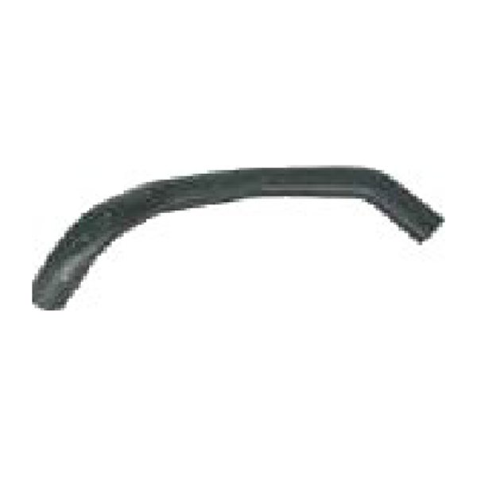
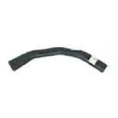
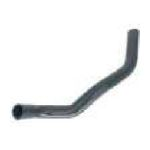
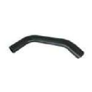
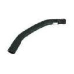
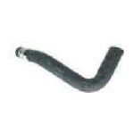
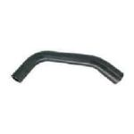
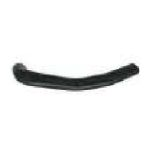
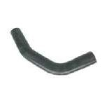

Parts › Pins, Axles & Linkage › 165112660071

Available
Email for a quote
Toyota 165112660071 Hose Preformed
| OEM part number | 165112660071 |
| Fits | Toyota |
| Category | Pins, Axles & Linkage |
| Type | Aftermarket replacement |
Send us the quantity you need and we'll reply with pricing, usually within 24 hours. Not the exact part? We can source it. Send the part number or a photo.
More Pins, Axles & Linkage

165111662071Radiator Hose
165112334071Hose Preformed
165112336071Hose Preformed
165112662171Hose Preformed
165121662071Radiator Hose
165122342071Radiator Hose
165122346071Hose Preformed
165122660071Hose Preformed